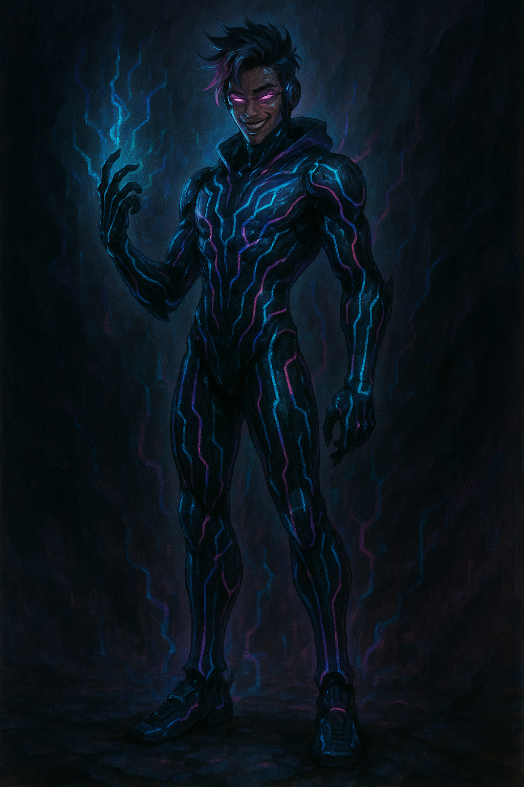

Pulse-Sync

Name & Alias: Pulse-Sync – Model 14 – The Neuro Accelerator
Age / Race / Role: Unknown / Kinetican – Speed Unit / Speed Warfare, Data Manipulator
Appearance: Lightweight synthetic frame with visible neural bands and shifting data patterns across limbs.
Affinities & Energy Types: Lightning, Data, Kinetic
Threat Tier: A+/S-Rank
Core Stats (0–10):
• Power: 6
• Speed: 10
• Technique: 9
• Intelligence: 8
• Defense: 5
• Aura Control: 7
Signature Abilities:
• Sync Dash Protocol
• Neuro-Jolt Overload
• Accel Reboot
• Data Surge Reflex
• Phase Pulse Barrage
Personality Summary: Hyper-reactive and analytical. Speaks in rapid bursts. Often processes multiple outcomes mid-battle.
Faction or Allegiances: Kinetican Forces